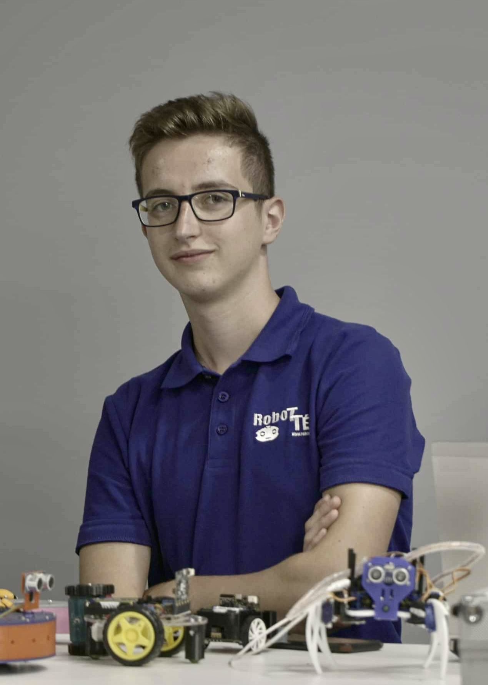
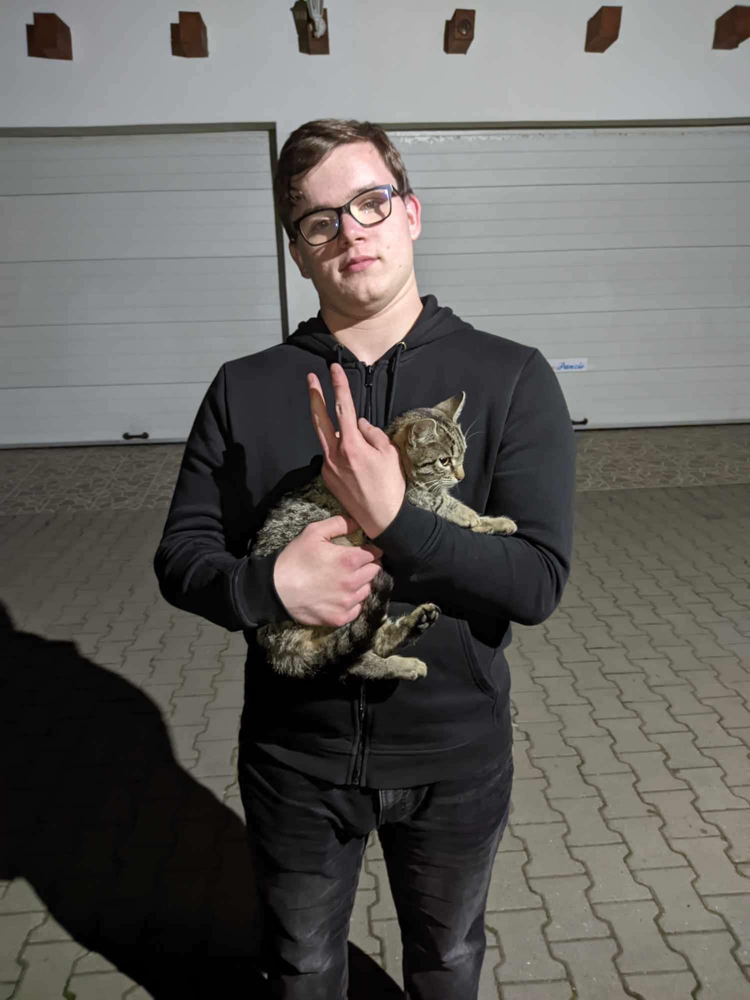
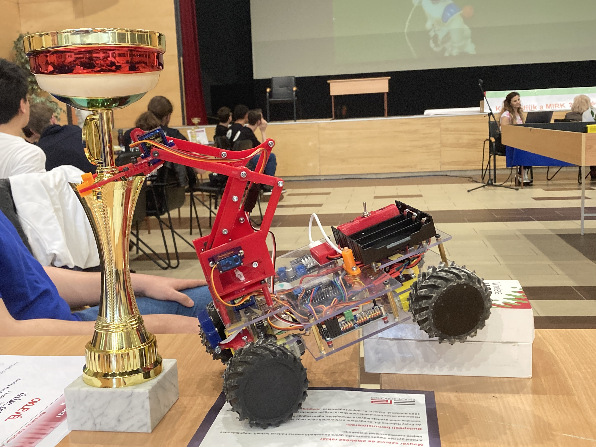
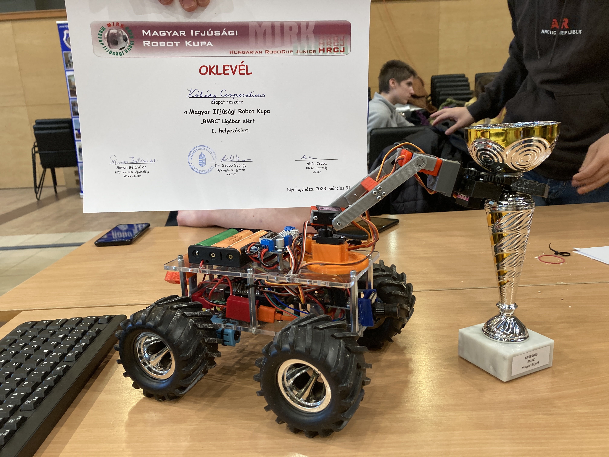
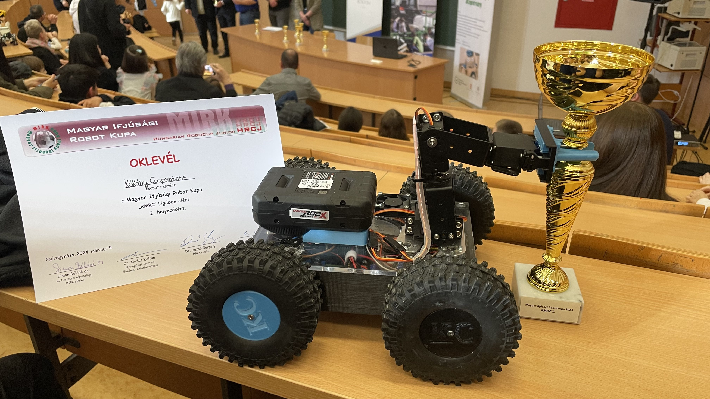
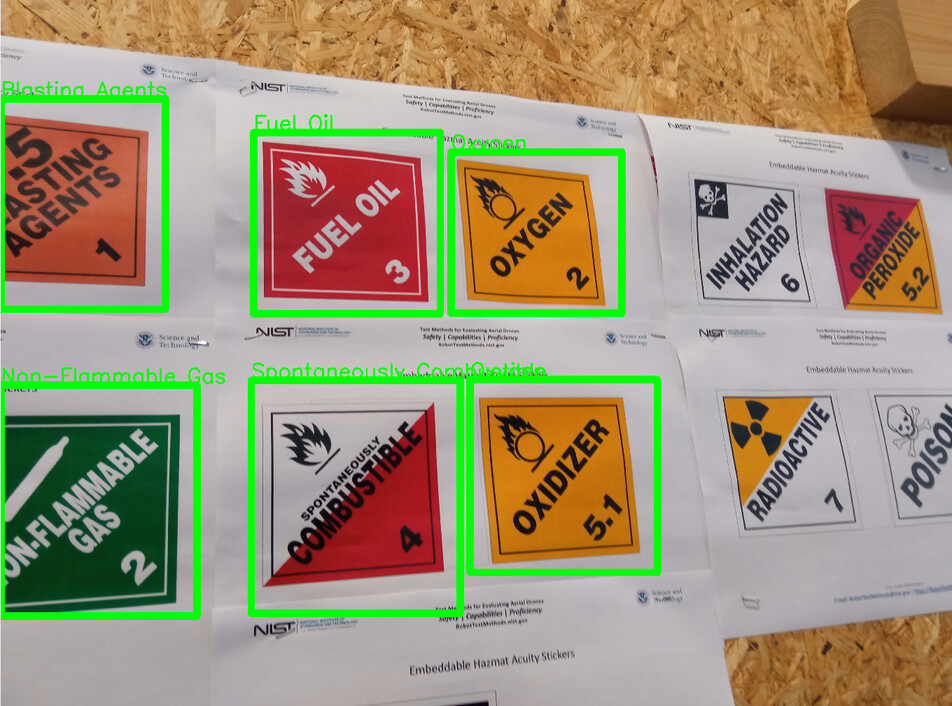

Logisctical Informations
Team name: Kókány Corporations
Organistaion: Nyíregyházi SZC Széchenyi István Technikum és Kollégium
Country: Hungary
Mentor: Mr. András Bakti
Contact Person: Mr. András Bakti
Phone: +3630/252-3931
Email: info@robottep.hu
Website: Our mentor's website
Our team consists of 4 ambitious members. We created this team in 2022, since then we have tried our best to participate in various competitions and challenge ourselves with more complicated projects. We all plan to go and study things related to robotics. We all plan to attend to university and learn more. We are good friends with each other and we try to help one another whenever we can. It is a mutual relationship between us, team mebers. If one of us doesn't understand a concept, we discuss it and move forward with the development.
Members of the team
Mr. András Bakti
Role: Mentor
Mr. Bakti András is a teacher at our school and our mentor. He focuses on finding sponsors. He also gives us advice about the robot's physical aspects and he will be responsible for our safety during our stay in Eindhoven.
Máté Mester
Role: Hardware
Máté focuses on the mechanical aspect of our robot, he works on the design and assembly of the robot. He's 18 years old and he designs the main body, and he designed our latest 3D printed wheels. He also deals with the logistical issues for the team. This is his third year with the team. Máté took interest in mechanical engineering since he's joined the team.
Tran Duy Dat
Role: Hardware
Dat also focuses on the mechanical aspect of the robot, he designs parts using CAD software and helps with the assembly of parts. He designed our custom support arm which enables the robot to climb steep surfaces. He's 18 years old as well and he has taken interest in mechanical engineering and web development. He's the one who developed the TDM as a website and designed the team shirt. He's also in his third year in this team.
Bence Vadász
Role: Hardware
Bence is the newest and youngest member of our team, he helps out with the hardware related aspects of our robot and the assembly. He's the one who designed our team's logo.
Zsolt Vadász
Role: Programmer
Zsolt is responsible for the software of the robot. He's the one who programmed the robot's movement and arm functionalities as well as its image recognition software. He's interested in micro controller programming as well as the manufacturing process of said controllers. He's 19 years old.
Competitions we have attended until now
MIRK 2022
Our first competition was in March 2022. As you can see the robot was made out of 2 3mm thick plexiglass sheets which were cut with laser. The arm was controlled with a PCA9685 PWM controller and our robotic arm used SG90 servos. We used 3 salvaged 18650 cells connected in series to provide 12V that we stepped down to 5V for the Raspberry Pi 4 and the PCA9685. We used the cheapest hobby DC motors we had on hand, which were controlled with a MotoZero and ran on 12V. unfortunately the motors broke down during the competition and we couldn't reuse them in the following year. Our robotic arm built using servos worked well, and got us enough points to win. We controlled the robot with a PlayStation 4 controller, the code was written in Python and can be viewed in this repository,
MIRK 2023
We participated in MIRK the next year as well, for which we used better motors and bigger wheels, which helped us in the uneven parts of the arena. We used a different arm design, which unfortunately did not work. Half of our motors were metal geared and the other half plastic geared. This was a big improvment because they didn't break this time. After winning the championship, our mentor, Mr. András Bakti encouraged us to test ourselves at RoboCup23.
RoboCup 2023

RoboCup 2023 in Bordeaux, France, was our first international competition. Our main improvement was going to be our custom robotic arm which we had been working on since MIRK.
The arm was meant to use 28BYJ-48 stepper motors all driven with a custom PCB with a couple of GPIO chips connected to darlington transistor arrays providing enough IO for up to 8 stepper motors. However we soon dropped our custom PCB idea as having the design manufactured was costly and also required soldering SMD components with which the team had no prior experience. We ended up using a single GPIO extender IC (also MCP23017 but in a through-hole package), and we reduced the number of actuators in our arm. In the end, our arm still did not work. The details are in a later section.
The sockets for the motors were 3D printed and the rough conditions were too much for the basic L shape motor holders. One of them broke in the middle of the competition.
An other challenge was the camera streaming and the image recognition, the latter of which was not working either due to a lack of experinece with machine learning. Zsolt had spent a great amount of time on debugging and programming.
All in all the competition was really helpful and we learned a lot from it.
MIRK 2024
This was our third time competing at MIRK and our third win in Hungary. With this we were three times Hungarian champions.
Kókánybot had come a long way. We moved our motors next to our electronics, decreasing the robot's height and optimizing the weight distribution. We switched the energy source from salvaged 18650 lithium-ion batteries to a 20V Parkside drill battery, however we had to add an extra buck converter. We also switched back to using MotoZero from the previously used L298N board due to space constraints, however the MotoZero could easily overheat, so we needed to install a fan and put a heatsink on it to prevent the circuits from overheating. We switched from steppers back to servo motors. We had also realized that the 3D printed arm wasn't durable enough so we used some metal parts we had on hand and built an arm out of those. For driving the arm, we used Adafruit's PCA9685 board. We also fixed the camera latency issues and intalled a second camera for on the robot's rear end.
We had two operators. One was driving robot and the other was assisting with the cameras. We had brought a secondary monitor with us to see the camera output better.
Software
Human-robot interface
We can interact with our robot via any laptop or desktop computer (although the latter isn't very practical), using either a Wireless or Ethernet (our choice) connection.
There are two main programs for interacting with Kókánybot:
kokanyctl
and
kokanyrecognize. The former is used for controlling the robot's actuators and
performing QR code recognition, while the latter uses our custom
image-recognition model to recognize hazmat signs. The details of
the programs and the connection are elaborated in the
Communication section.
kokanyctl
takes keyboard input and sends it to
a daemon
running on Kókánybot which processes the raw input into usable
events.
Simplifying our software with device trees
Last year we used a library called libi2c to control some of our stepper motors using an external MCP23017 GPIO expander. Since then we have switched to using servos for our robotic arm. We also wanted to make our software more flexible, and the best way to do this was ripping out the useless code and using the right tools for the job.
While programs are allowed to just use libi2c, it adds (often redundant) extra code to a project, not to mention a lot of extra complexity since low-level driver code is not trivial. The Kernel actually has drivers for a lot of common ICs such as GPIO expanders—like the MCP23017 we used—or PWM controllers like the PCA9685.
One improvement we've made was deleting the I2C parts from our code, and instead using the kernel driver instead. This is great because we can just interact with the userspace PWM API via something like libhwpwm (more on that later).
To achieve this, we wrote a device tree overlay. Device tree overlays are kind of like patch files for device trees. This file allows us to tell Linux what chips are available on certain I2C addresses.
Switching from TCP to UDP
Robotics taught us just how fragile computers are when subjected to harsher environments. Short circuits may occur, components might get knocked against a robot's frame, boards can overheat, all of which can result in a robot rebooting or shutting down entirely.
In our previous competitions, we have always had faults like these occur. If things were going too well, then our UTP cable slipped out of our control station's Ethernet port. In these cases, we almost always had to reboot our robot and do the software side of the setup again and then reconnect, wasting precious time.
Mitigating these issues while sticking with TCP sockets would mean having to handle potential connection issues every time we send/receive data. Instead of doing that, we've switched to UDP, which is a different communications protocol. As of now, none of our programs contain any any TCP related code making all networking stateless (the multimedia bits might be stateful but FFmpeg deals with all of that).
The main advantage of UDP compared to TCP is its statelessness:
networked programs do not need to
connect(), listen() nor
accept(), which also means no need to track clients;
you create a socket, and send/receive data over it using
sendto() and recvfrom(). This eliminates
the need for handling reconnections. This is great because our
custom network code sends only a stream of octets (detailed in the
next section), which always correspond to a keypress or key
release.
The main downsides of UDP are that it does not guarantee data packets arriving in the correct order nor does it guarantee that they arrive at all. This is not really an issue for us, since the entire network is point-to-point with no more than two hosts, and we have yet to experience any problems.
Network arcitecture
Kókánybot has to transport two kinds of data: keyboard input and video data. There are two ways to go about transporting them: we could have chosen to multiplex the input and the video and data streams (similar to this SO answer implemented using the API). We chose the path of least resistance though, and went with separate connections for each video feed and input. Currently there are two camera feeds and a connection for transporting keycodes . This allows us to avoid a lot of headaches and keep the networking as stateless as possible.
We don't use any complicated protocols for data transmission, because we'd liked to keep the processing needs as low as possible.
Efficiently encoding keyboard input for low overhead
Keys on a keyboard usually correspond to
scancodes
in software. These values do not necessarily correspond to
characters, since they're the raw values of keys, and do not take
the user's layout into account. SDL2 allows us to easily convert
scancodes to keycodes which
do correspond to actual characters a user may type in. The
macro used to this conversion is
SDL_SCANCODE_TO_KEYCODE().
Sending keycodes over the wire is part of the solution, but we also need to send the state of the key (whether it's pressed or not), ideally in a single byte.
A key can have two states meaning, two possible values, so it can be represented in log22=1 bits. This leaves 7 bits to represent keycodes, but there are more than 27 possible values. However, we only handle WASD and numeric keys. Anything else is ignored on the server side.
We use some bit manipulation to encode and decode the actual data:
net_encode_scancode()
in kokanyctl encodes the state into the most
significant bit of the octet by shifting a boolean (false
and true correspond to 0 and 1 in C) 7 bits to the
left (pressed << 7) and then we bitwise OR it
with the keycode.
On the receiving end, kokanybot processes the
incoming data in
input_process_key_event . This calls an inline function,
is_key_pressed which uses a boolean trick (in C,
everything aside from 0 is true, so two
boolean NOTs result in 0 or 1 if the value is anything but zero).
0x80 corresponds to 128 in hexadecimal, which
corresponds to the most significant bit (10000000(2)),
where we stored the state of the key. bitwise ANDing the keycode
with 128 produces either 0 or 128, and this is what we convert to
either 0 or 1 with the previous boolean trick. Afterwards we
discard the most significant bit, because the eight bit represents
the key state and isn't part of the keycode itself. We then
look up
the correct function.
Removing gas sensing code
The rulebook's latest draft does not mention CO2 sensing, therefore we've removed all code related to it. If a later draft brings it back, we can just reuse a previous commit, as we've often done during development.
Training an object detection model
Last time, one of the most challenging aspects of the competition was the object detection feature robots needed. Back in Bordeaux, we failed to detect anything and got 0 points for object detection. We definitely needed to improve on that.
Firstly, we found a large enough dataset on the internet (1k+ photos), which was a godsend because it spared us from having to manually take pictures and tag them.
Secondly, we switched from the outdated YoloV5 to the up-to-date YoloV8 which is supposedly better in every single way. We chose the small version, because the larger the model, the slower inference is, and while performance doesn’t really matter when training, one can simply leave their computer running while they are not home, it is still vital during inference, because our laptops are not on par with our workstations at home.
To use our model, we wrote a script named kokanyrecognize at the last minute. It wasn’t very performant nor really clean, so we spent a significant amount of time working on it. So far it was rewritten to use the new model, however it still has a long way to go.
Here is the result so far:
Communication
We interact with our robot using a few custom programs, named KókányControl (kokanyctl) and KókányRecognize (kokanyrecognize).
KókányControl has a graphical interface for displaying the video and the sensor data it receives from Kókánybot. It takes keyboard input, and sends commands to the Raspberry Pi. It also recognizes QR codes that appear on Kókánybot’s cameras.
KókányRecognize was written to reduce the complexity of KókányControl, since image recognition functionality is only needed in a few runs, and we can just launch KókányRecognize whenever we need it. This also enabled us to build KókányControl in pure C, since we would have needed to use C++ to build the image recognition bits (which uses OpenCV).
Video and audio streaming
During tests, operators are only allowed to see the arenas from their robot’s point of view. This meant we needed a way to find a way to display the video data from the robot’s cameras.
We've learnt from our mistakes last year, and have opted for using multiple cameras so that we have better peripheral vision while controlling Kókánybot.
Multimedia related tasks are surprisingly computation heavy when one is working with embedded systems. The CPU in the Raspberry Pi 4B+ is fairly capable, however we also had to consider power draw and thermal related problems. We considered several video formats: H.265, AV1 and H.264, but in the end we settled on using raw frames from our cameras to minimize latency as much as possible, since at the 2023 RoboCup, our camera's high latency caused a lot of trouble.
Linux assigns /dev/videoN to every camera. The kernel
does not guarantee the order of the camera devices, however we
must be able to tell them apart in a consistent way. Linux
provides a way to do this using
udev rules. We
gathered the attributes of the cameras using
udevadm—a standard udev utility—and
wrote rules
to assign the /dev/front-camera and
/dev/rear-camera
names to our cameras.
On the client side, we implemented the decoding of the video data using FFmpeg’s libavformat and libavcodec libraries. Rendering the video frames was tricky to figure out because pretty much all video encoders store pixels in YCbCr colour space, which SDL isn’t the best for.
The APIs of the libav* libraries are huge. Thankfully we only really needed the high level decoding API. The Learn FFmpeg libav the Hard Way tutorial combined with the examples in the project's documentation also made things much easier.
Human-robot interface
Still thinkking
Hardware
Setup and packing, operation station
Mission strategy
Tests and experiments
Strenght of the robot on the field
The build and the development process of the robot.
The building logics of our robots
We will demonstrate our build process in this sections. The robot itself is divide to four parts.
- The body of the robots
- The movement part
- The support arm (we call it Flipper)
- The robot arm
Movement structure
We were putting a lot of thought in our wheels, because in the previous competitions the radius of the wheels weren't enough. It always stuck on something high so this time we selected a wheels which bigger in radius with that we started the development for the rim the process was hard and we had many fails in the implementation.
The very first version of the wheels had a very big issue. The shaft was originaly separated from the rim so the wheels were easily switchable but we redesigned it because we saw it pointless as we were using the biggest tire possible and didn't want to switch to a smaller one so we merged the shaft into the rim, however we quickly realised it was a big mistake. On the testing phrase the shaft broke on the conecting part of the rim on strong impact. So we raised the surface on the conntecting part of the rim and the shaft but on the competition it broke again.
So as we learned our mistakes we separated the shaft and rim again. The shaft itself is made out of steel so it's durable incase of an impact however the rim is 3D printed for our tire. Here u can see the 3D designes of our wheels. The motor is JGA25-370 12V and as we searched for motors it is the strongest and most suitable for our robot because it gives us strenght for a low price. Of course we had to make a holder for the motor. In the previous RoboCup we had an issue which prevented us for getting more points ia the motor holder. We had an L shaped holder which broke during the competition so this time we designed a more durable one.

Flipper (Support arm)
Robot arm
The main part of our robot
What we learned so far
In the beginning we used TinkerCAD for 3D modelling, later on we switched to AutoDesk Fusion360 and gained experience with it.
What are we gonna do until the competition
We are facing an upcoming "event" in our life. In our country this time of the year amd age all highschool student will be attending a examination which will decide our future. Preparing to the competition and at the same time studying to our upcoming exams is very difficult so we are trying to divide our time accordingly. Of course we want to get better grades and points from the exam as well as work more on the robot and test as many of the scenarios that could accour during the competition.
Software packages and hardware components
Software packages
| libgpiod | DC motor control, sensor control, stepper control |
| OpenCV | Image recognition |
| FFmpeg | Video streaming, Image recognition backend (used by OpenCV) |
| SDL2 | Used by KókányControl to process keyboard input and display video |
| SDL2_ttf | Used by KókányControl to draw text for displaying sensor data |
| SDL2_net | Used by KókányControl to handle networking |
| libzbar | Used for QR code detection |
| YoloV8 (small) | The model we use for object detection |
| RMRC Dataset | Dataset used for training our image recognition model |
| undefined medium | The font used in kokanyctl |
| libhwpwm | A C library to interface with the Linux PWM userspace API |
hardware Components and estimated prices
| Component | Cost (in Euros) |
|---|---|
| Raspberry Pi 4B+ | 71 |
| 4x JGA25-370 12V 60rpm | 34.58 |
| Parkside X20V Drill Battery | 42.16 |
| DCDC-6010-M, DC/DC step-down, max. 60V, max. 10A | 17 |
| Webcamera | 26.78 |
| 2x LT-623 | 4.23 |
| 2kg PLA filament for 3D prints | 60.75 |
| 5x Tower Pro MG996R | 44 |
| Adafruit PCA9685 servo controller | 13,77 |
| 6-24V 12V/24V to 5V 3A CAR USB Charger Modul | 3 |
| AX SS HYRAX crawler tire 120mm diameter 4pc pack | 30,52 |
| SZBK07 300W buck converter | 13 |
| IRISTech W-25 | 26 |
| Overall cost of components |